Практичні курси · журнал «ДентАрт» 2016 №2
Гіперплазія ясен в аспекті місцевого хронічного запалення
GINGIVAL HYPERPLASIA IN THE ASPECT OF LOCAL CHRONIC INFLAMMATION
У статті висвітлено основні етіопатогенетичні, клінічні та терапевтичні питання проліферативного запалення ясен. Хронічна локальна під'ясенна інвазія мікроорганізмів і продуктів їхньої життєдіяльності — одна з найчастіших причин розвитку гіперпластичного гінгівіту. Подано клінічні спостереження в ході лікування пацієнтів з гіперпластичними формами гінгівіту, що розвинулися на фоні місцевих несприятливих факторів.
Визначення і терміни
Термін «гіпертрофія» патоморфологічно визначається як розростання тканини в результаті збільшення обсягу і маси клітин, тоді як гіперплазія — це об'ємне розростання тканини в результаті збільшення кількості клітин шляхом їх надлишкового новоутворення. В основі гіпертрофії лежать гіперпластичні процеси, зумовлені доброякісним розростанням волокнистих структур власної пластинки ясен. З точки зору термінології «гіперплазія» є більш універсальним терміном, оскільки об'єднує в собі запальні процеси в яснах, розростання тканин пухлинної або медикаментозної природи і спадково зумовлені захворювання.
При визначенні діагнозу вітчизняні фахівці використовують термінологію класифікації М.Ф. Данилевського, 1994, а саме — гіпертрофічний гінгівіт, і міжнародну класифікацію хвороб МКХ-10, де ця форма патології позначається як гіперпластичний гінгівіт. Класифікація захворювань пародонту, прийнята на симпозіумі Американською асоціацією пародонтологів (AAP) та Європейською федерацією пародонтологів (EFP) у 1999 році, вказує на те, що розростання ясен може бути як пов'язане із зубною бляшкою, так і не пов'язане з нею, або розвинутися в результаті вроджених чи придбаних аномалій і вад [1, 4].
Данилевський М.Ф. виділяє дві форми гіпертрофічного гінгівіту — набрякову і фіброзну, які можуть мати локалізований або генералізований характер [3]. Якщо патологічний процес охоплює не більше 30% тканин ясен, які оточують наявні зуби, то прийнято говорити про локалізоване ураження, а якщо відбувається зміна більш ніж у 30%, то ця форма патології має генералізований характер [2].
Фізіологічні аспекти
Ясна, як і вся слизова оболонка ротової порожнини, мають високий ступінь резистентності та адаптованості до несприятливих впливів місцевих факторів. Зубоясенна зона ротової порожнини фізіологічно і анатомічно сформована таким чином, що вона легко очищається від залишків їжі, детриту та ін. за рахунок рухів язика, щік, губ, постійного омивання ротовою рідиною, процесу ковтання. Ознаки розростання ясен, пов'язані з наявністю зубної бляшки, найбільше виражені з вестибулярної поверхні зубів і практично відсутні з оральної поверхні, що частково пов'язано з очищувальною дією язика і харчового комка під час їди.
У місцях найбільшої акумуляції біоплівки, а потім зубної бляшки виникає ураження ясен, яке може розвинутися за типом проліферативного запалення. На характер розвитку запального процесу вирішальний вплив мають стан реактивності макроорганізму, різноплановість ушкоджуючих факторів, тривалість і сила їх впливу. Слід зазначити, що найінтенсивніше гіперплазія ясен розвивається при одночасному впливі мікробної бляшки, з одного боку, і системних факторів — з другого.
Етіологічні аспекти
Розвиток гіперплазії ясен, зумовлений поєднаним впливом кількох місцевих та/або загальних факторів, впливає як на обсяг лікувальних втручань, так і на терміни реабілітації та прогноз. Ступінь проявів проліферативного запалення в яснах безпосередньо залежить від тривалості впливу таких несприятливих локальних факторів, як вплив зубних відкладень, наявність скупченості зубів, хронічної травми тканин пародонту навислими краями пломб, кламерами, штучними коронками, елементами брекет-системи та ін.
Певне значення мають аномалії прикусу, ротове дихання, механічне перевантаження зубів і тканин пародонту, що зустрічається за ортодонтичної патології, яка може призвести до порушення кровообігу у вигляді гемо- та лімфостазу, периваскулярного набряку, діапедезу формених елементів крові, агрегації тромбоцитів, і нарешті — тромбозу судин. Мілке переддвер'я ротової порожнини і/або наявність «тягнучих» тяжів слизової оболонки створюють осередки ішемізації м'яких тканин, і в таких умовах шкідлива дія мікроорганізмів значно посилюється [2].
Прояв генералізованої форми гіперпластичного гінгівіту частіше зумовлений додатковими змінами з боку системних факторів, наприклад, під час пубертатного, клімактеричного періоду, періоду вагітності, при ендокринних захворюваннях (щитоподібної, підшлункової, статевих залоз), хворобах крові (лейкемічні ретикульози, мієлолейкози), при захворюваннях нирок, шлунково-кишкового тракту, при генетичній схильності.
Генералізована гіперплазія ясен у 30-50% випадків спостерігається у період тривалого вживання антиепілептичних препаратів (Дифенілгідантоїн), блокаторів кальцієвих каналів, що застосовуються при лікуванні стенокардії і гіпертензії (Ніфедипін, Вераміл та ін.), імуносупресивних засобів (Циклоспорин А та ін.), також проліферативні реакції ясен можуть посилюватися при використанні оральних контрацептивів [4, 5, 6].
У клінічних випадках пубертатного періоду розростання ясен може піддаватися спонтанній редукції, проте не зникає повністю при незадовільній гігієні ротової порожнини. Ювенільну гіперплазію ясен пов'язують з підвищенням реактивності тканин пародонту внаслідок формування нових судинних мереж на тлі гормонального дисбалансу. Формується зачароване коло — чим більше виражені гіперплазія і набряк ясен, тим важче пацієнтові чистити зуби, а накопичення нальоту призводить до ще сильнішої запальної реакції тканин пародонту, і створюються умови для інтенсивної пенетрації пародонтопатогенів у підлеглі тканини [3].
Патогенетичні аспекти
Підкоряючись загальнопатологічним законам, гострі і хронічні запальні захворювання ясен в залежності від стадії запалення характеризуються основними патоморфологічними змінами: альтерацією, ексудацією і проліферацією. Хронічне запалення може розвиватися як результат гострого запалення. Однак часто воно із самого початку має хронічний характер і тривалий час має прихований безсимптомний перебіг, при якому одночасно існують ознаки як активного запалення і ушкодження тканин, так і їх репарації.
На відміну від гострого запалення, що проявляється помітною альтерацією, судинними реакціями, ексудацією, набряком та вираженою інфільтрацією нейтрофілами, при хронічному запаленні альтерація буває виражена менше. Процес характеризується продуктивною тканинною реакцією з інфільтрацією мононуклеарами, з вогнищами некрозу, а також неспроможною репарацією, ангіогенезом і склерозом тканини. Хронізація запалення залежить як від характеру причини, що його викликала, так і від індивідуальних особливостей реагування організму.
Клініка
При набряковій формі гіперпластичного гінгівіту характерні скарги на болючість, кровоточивість, дискомфорт під час їди, неприємний запах з рота. Об'єктивно відзначається набряк маргінальної частини ясен, синюшний відтінок ясенних сосочків, утворення ясенних, так званих «несправжніх» кишень, які легко кровоточать при зондуванні, наявність зубних відкладень.
При фіброзній формі пацієнт скаржиться на незвичайний вигляд і форму ясен. Об'єктивно визначається наявність ясенних сосочків, що розрослися; як правило, вони не кровоточать при зондуванні і щільні при пальпації, їх поверхня горбиста. У випадках незадовільної індивідуальної гігієни помітні характерні симптоми запалення: набряк, гіперемія, кровоточивість при зондуванні, галітоз. При всіх формах гіперпластичного гінгівіту епітеліальне прикріплення не порушене.
Виділяють 3 ступені тяжкості гіперпластичного гінгівіту в залежності від вираженості гіперплазії ясен: перша — розростання ясен в межах 1/3 висоти коронкової частини зуба, друга — в межах 1/2 і третя — більш ніж на 2/3.
Додаткові методи дослідження, такі як індекс кровоточивості сосочків РВI (Saxer, Muhlemann, 1975) або BoP (Ainamo, Bay, 1975), індекс гінгівіту GI (Loe, Silness, 1963), індекс зубного нальоту PI (O'leary, 1972), на підставі сукупності отриманих даних дозволяють констатувати наявність і оцінити ступінь змін у тканинах ясен, проаналізувати взаємозв'язок між акумуляцією нальоту і поширенням запального процесу. Індексна оцінка робиться як у фазі активного протизапального лікування, так і на етапах корекційної та підтримуючої терапії.
При рентгенологічному обстеженні пацієнтів з гіперпластичним гінгівітом, незалежно від форми, ознаки втрати кісткової тканини відсутні. Диференціальна діагностика провадиться з фіброматозом ясен, гіперплазією ясен при лейкозі, різними формами епулісу.
Лікування гіперпластичного гінгівіту передусім має бути спрямоване на усунення етіологічних причин, корекцію місцевих і загальних провокуючих чинників, проведення локальної протизапальної і за необхідності хірургічної терапії. Справжні і несправжні пародонтальні кишені — резервуар мікробних скупчень і продуктів їхньої життєдіяльності. Гінгівектомія (Robicsek, 1884) є головною методикою усунення гіпертрофічних розростань ясенного краю, характер і радикальність якої планують з тим розрахунком, щоб після хірургічного втручання глибина була 3 мм [2].
Клінічний випадок 1
Пацієнт І. 24-х років звернувся зі скаргами на незвичайну форму ясен, дискомфорт при чищенні зубів протягом останніх двох років. Останні два тижні турбує виражений неприємний запах із рота і посилюється болючість у яснах при вживанні їжі. Зі слів пацієнта, проблеми з'явилися у підлітковому віці, і тоді було рекомендоване ортодонтичне лікування, але воно не було проведене. Загальносоматичний статус пацієнта не обтяжений.
Локальний статус: на фронтальній ділянці нижньої щелепи глибина переддвер'я ротової порожнини 7 мм, секреторна функція дрібних слинних залоз нижньої губи — помірна. Візуально визначається виражена гіперплазія ясенних сосочків більш ніж на 2/3 коронкової частини нижніх фронтальних зубів, поверхня сосочків горбиста з ціанотичним відтінком, помітна їх пастозність, при пальпації сосочки щільні, безболісні (фото 1). Глибина ясенних кишень досягає 8 мм. Зубоясенне прикріплення не порушене. Виявлено скупчення рясних твердих і м'яких над- і під'ясенних зубних відкладень, переважно з вестибулярної поверхні зубів на фронтальній ділянці нижньої щелепи. Маргінальна частина ясен верхніх щелеп і в бічних ділянках нижньої щелепи гіперемована, набрякла, різко болюча при пальпації. Є точкова виразка вільної частини ясен в зоні зубів 12, 11, 21, 22. Індекс зубного нальоту PI — 89%. Індекс кровоточивості BoP — 76%. Рухливість зубів у межах фізіологічної норми.
Центральна лінія нижньої щелепи зміщена праворуч, є виражена стертість рвучого горбика зуба 33, протрузія нижніх різців, діастема і треми на фронтальній ділянці нижньої щелепи, наявність множинних вертикальних тріщин емалі фронтальних зубів нижньої щелепи. При панорамному рентгенографічному обстеженні верхніх і нижньої щелеп немає видимих патологічних змін кортикальної пластинки верхівок міжальвеолярних перетинок (фото 2).
Діагноз: гіпертрофічний локалізований гінгівіт в зоні нижніх передніх зубів, фіброзна форма, третій ступінь тяжкості (згідно з класифікацією Данилевського М.Ф., 1994). Гіперпластичний гінгівіт тяжкого ступеня — K05.11 (згідно з МКХ-10).
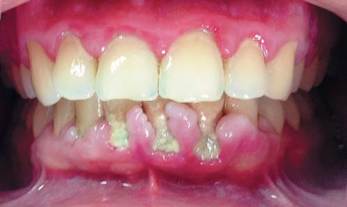
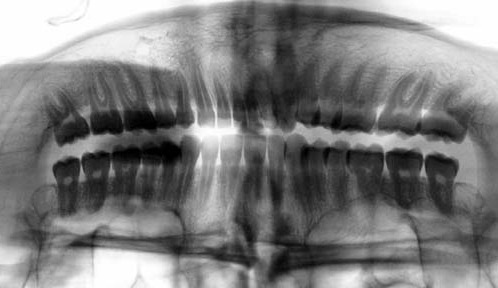
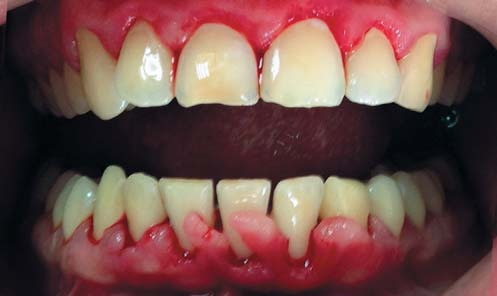
Лікування. Лікувальні заходи передбачають проведення протизапальної терапії, зняття зубних відкладень, санацію ротової порожнини і корекцію маргінальної частини ясен — гінгівектомію. Рекомендована консультація інтерніста і лікаря-ортодонта. Профілактичні заходи передбачають навчання індивідуальній гігієні ротової порожнини і контроль за її здійсненням.
Протокол лікування у перші відвідини:
- антисептична обробка ротової порожнини;
- інфільтраційна анестезія;
- проведення над- і під'ясенного скейлінгу за методикою одноетапного руйнування і видалення зубних відкладень (FMDe — Full Mouse Debridement);
- згладжування поверхонь зубів (фото 3);
- іригація ясенних кишень 0,2% розчином хлоргексидину.
З метою зняття запальних процесів і профілактики ускладнень призначено місцеве лікування — полоскання ротової порожнини 0,12% розчином хлоргексидину та аплікації гелю «Gengigel» на зону маргінальної і папілярної частини ясен протягом 14 днів. Дано рекомендації з догляду за ротовою порожниною.
Через добу після зняття зубних відкладень пацієнт відзначає зниження больових відчуттів в яснах на верхніх і нижній щелепах. Об'єктивно визначається зменшення клінічних ознак запалення (фото 4). У друге відвідування проведено гінгівектомію на ділянці нижніх фронтальних зубів (фото 5). Дано рекомендації з догляду за ротовою порожниною і рановою поверхнею. Пацієнта взято на диспансерний облік.
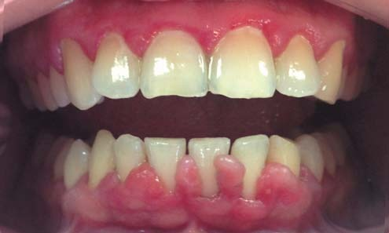
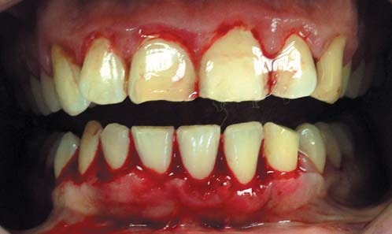
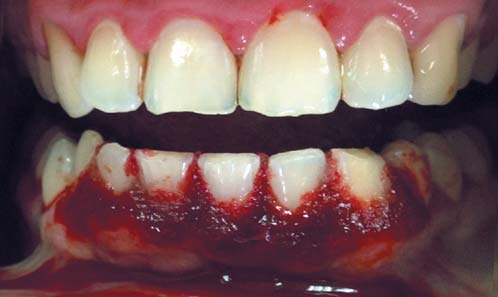
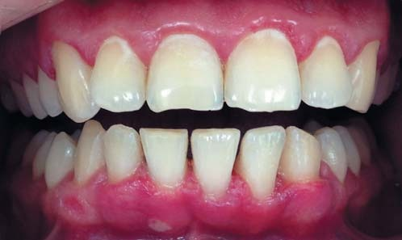
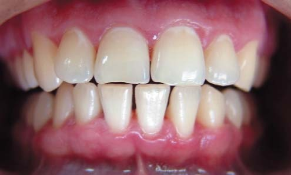
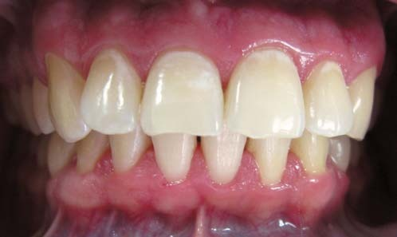
Клінічне спостереження
Через тиждень після гінгівектомії в зоні нижніх фронтальних зубів помітні клінічні ознаки вторинного загоєння поверхні рани і зменшення симптомів запалення на всіх ділянках ясен. Індекс зубного нальоту PI — 40%. Індекс кровоточивості BoP — 25% (фото 6).
У найближчі терміни спостереження, через два з половиною тижні, міжзубні сосочки в зоні зубів 33-43 набувають трикутної форми, клінічні ознаки запалення на ділянці маргінальної частини ясен візуально не визначаються, PI — 30%, BoP — 23% (фото 7, 7 а).
У віддалені терміни спостереження, через шість місяців після гінгівектомії, пацієнт на контрольному огляді скарг не має. Від ортодонтичного лікування тимчасово відмовився. Об'єктивно в зоні нижніх фронтальних зубів відзначається збільшення об'єму і висоти міжзубних сосочків з тенденцією до їх зростання в коронарному напрямку, ясна блідо-рожевого кольору, PI — 20%, BoP — 35% (фото 8). При визначенні рівня зубоясенного з'єднання фіксується виражена кровоточивість і наявність ясенних (несправжніх) кишень глибиною до 3,5 мм в зоні апроксимальних поверхонь зубів 33, 32, 42, 43; в зоні зубів 31, 41 глибина ясенної борозни до 2 мм, помітна точкова кровоточивість (фото 9). При стоматоскопічному обстеженні на фронтальній ділянці нижньої щелепи поверхня слизової оболонки маргінальної частини ясен характеризується нерівномірною локалізованою горбистістю, переважно в зоні міжзубних проміжків зубів 33-43, визначаються множинні вирости, які за формою нагадують дрібні сосочки, розташовані вздовж усього краю вільної частини ясен (фото 10 а, 10 б).
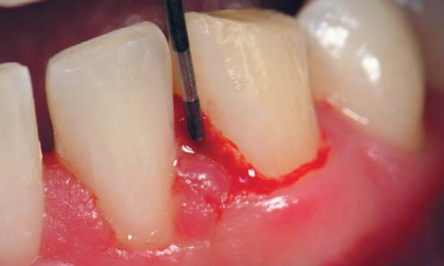
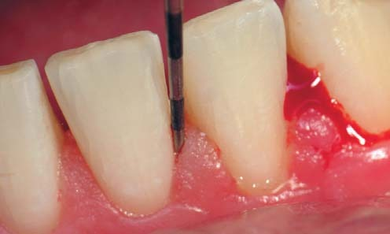
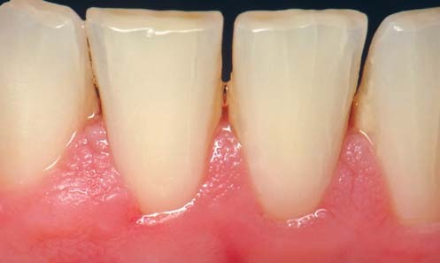
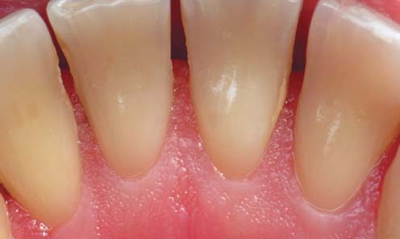
У результаті проведеної терапії, істотного поліпшення якості індивідуальної гігієни та мотивації пацієнта досягнута стійка клінічна ремісія запального процесу ясен у бічних ділянках нижньої і верхніх щелеп. Однак через шість місяців після лікування в зоні міжзубних проміжків нижніх фронтальних зубів спостерігаються клінічні ознаки проліферативного запалення, що свідчать про локальний рецидив гіперплазії ясен. Відсутність ремісії патологічного процесу в цьому клінічному випадку пов'язана з локальними індивідуальними анатомічними і функціональними особливостями. Підтримуюча терапія тканин пародонту в стані клінічного благополуччя здійснюється на етапах диспансерного спостереження.
Клінічний випадок 2
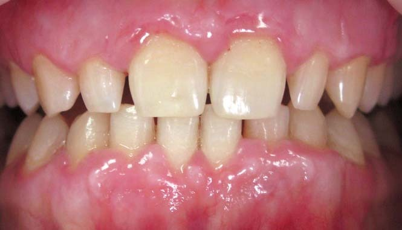
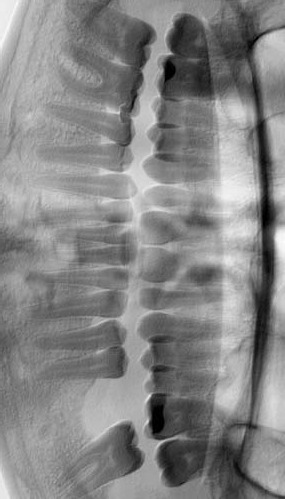
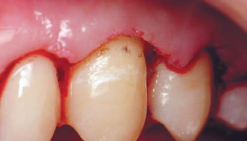
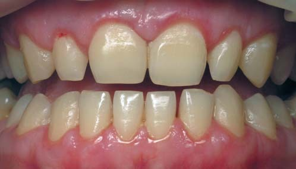
Клінічний випадок 3
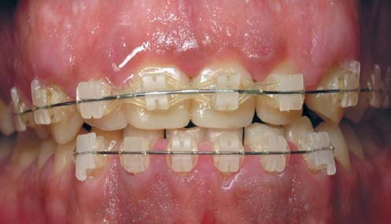
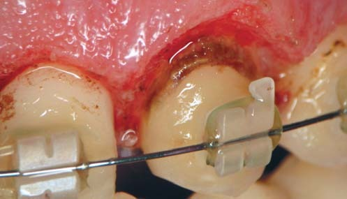
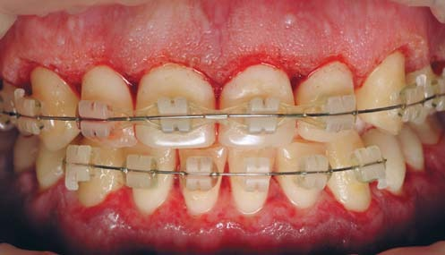
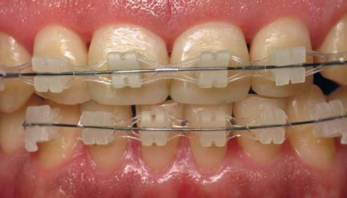
Клінічні випадки 2 і 3, подані на фото 11-18, демонструють гіперпластичні зміни в тканинах ясен, передусім пов'язані з несприятливими місцевими факторами, одним з яких є акумуляція під'ясенних зубних відкладень.
Висновки
Одночасний вплив анатомо-фізіологічних особливостей, ортодонтичної патології і порушення якості індивідуальної гігієни в більшості випадків призводить до різного роду запальних змін в яснах, ступінь тяжкості яких залежить від сукупного впливу як місцевих, так і загальних факторів.
Хронічні проліферативні запальні процеси в яснах, пов'язані з тривалим впливом зубних відкладень, є причиною розвитку гіперпластичного гінгівіту в ділянках локальної під'ясенної інвазії мікроорганізмів і продуктів їх життєдіяльності.
Планування лікувальних заходів, спрямованих на корекцію запального процесу в яснах, має передбачати характер, вид, тривалість впливу місцевих несприятливих чинників з обов'язковою індивідуальною оцінкою загальносоматичного статусу пацієнта. Усунення під'ясенних зубних відкладень, згладжування поверхонь зубів і висічення ясенних кишень — першочергові завдання у комплексній терапії пацієнтів з гіперплазією ясен, асоційованою з мікробним фактором.
Залежно від клінічної ситуації результат комплексного лікування оцінюється як клінічне благополуччя, ремісія або стабілізація патологічного процесу. Основою профілактики гіперплазії ясен, асоційованої з хронічною дією мікробного фактора, є своєчасне якісне видалення зубних відкладень. Подальше вивчення віддалених результатів лікування пацієнтів з гіперплазією ясен дозволить оцінити ефективність лікування з урахуванням індивідуальних особливостей, наявності ортодонтичної патології та генетичної схильності.
Література
- Вольф Г.Ф. Пародонтология / Г.Ф. Герберт, М.Р. Эдит, Р. Клаус; пер. с нем.; под ред. проф. Г.М. Барера. — М.: МЕДпресс-информ, 2008. С. 93-108.
- Грудянов А.И. Заболевания пародонта / А.И. Грудянов. — М.: ООО «Медицинское информационное агентство», 2009. С. 30-37, 220.
- Данилевский Н.Ф. Заболевания пародонта / Н.Ф. Данилевский, А.В. Борисенко. — К.: ВСИ «Медицина», 2011. — 616 с.
- Мюллер Х.П. Пародонтология / Ханс-Питер Мюллер; пер. с нем.; под ред. проф. А. М. Политун. — Львов: ГалДент, 2004. С. 79-84.
- Hallmon W.W., Rossman J.A. The role of drugs in the pathogenesis of gingival overgrowth. A collective review of current concepts // Periodontology 2000. — 1999. — Vol. 21. — P. 176-196.
- Marshall R.I., Bartold P.M. A clinical review of drug-induced gingival overgrowth. / Aust. Dent. J. — 1999. — № 44. — P. 219-232.